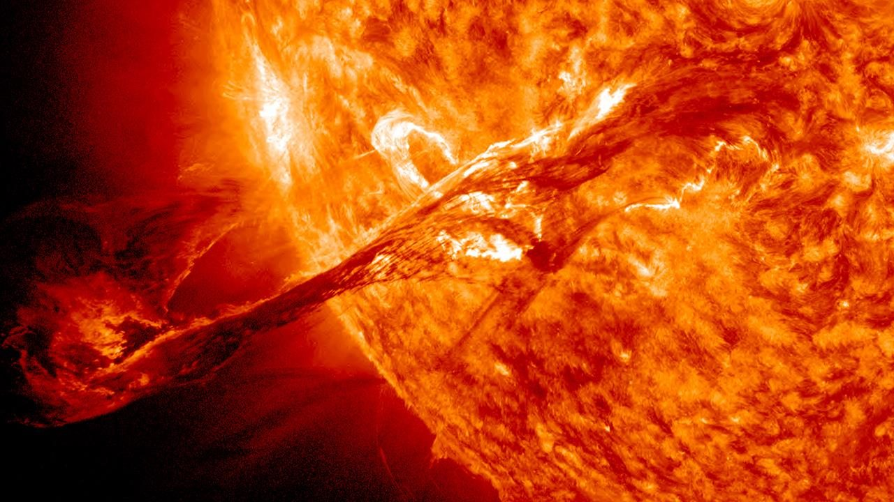
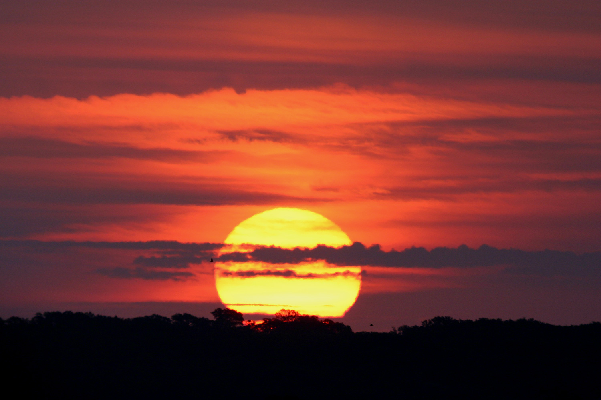

Sun
The sun that we see every morning is just one out of billions of stars that we see in the night sky. Our star is called Sol, or Sun. It is what everything in our solar system revolves around. It contains 99.86% of the mass of our solar system, and and is the main reason life exists. The sun is mostly made up of hydrogen and helium, and undergoes fusion which produces heat. Although it is still a young star, the sun is halfway through its main sequence stage. This means that the sun will eventually expand outwards, possibly consuming Mercury, Venus, and Earth.